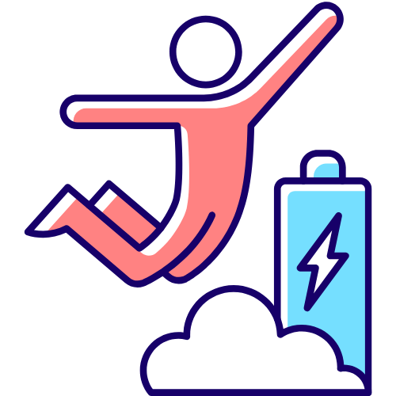
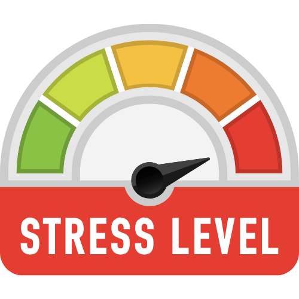
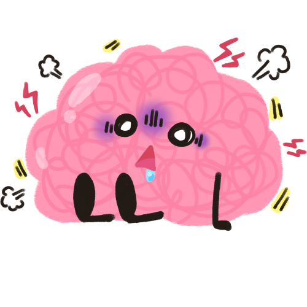
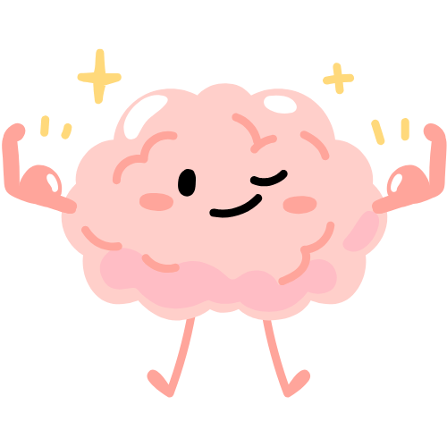

Você já se sentiu estressado(a)?
Considerado um problema recorrente na sociedade, o estresse, em altos níveis, é uma circunstância que exige cuidados, pois oferece riscos sérios à qualidade de vida.Trata-se de um quadro que pode evoluir para doenças, por isso, é imprescindível saber como aliviar o estresse.
Neste post, vamos abordar informações valiosas para cuidar da sua saúde! Continue lendo, e veja dicas incríveis sobre como aliviar o estresse e evitar riscos à sua saúde para ter um dia a dia mais tranquilo e agradável.
O estresse é uma reação natural do organismo em resposta a situações de risco ou ameaça e que coloca a pessoa em um estado de alerta. Sendo assim, a condição provoca alterações hormonais que causam sintomas físicos, bem como psicológicos.
Nesse sentido, o estresse pode ser causado por diversos fatores e situações típicas na rotina de milhares de pessoas. Os principais gatilhos podem ser problemas financeiros, familiares e no âmbito do trabalho. O estresse também pode ser desencadeado por uma rotina acelerada, quadros de adoecimento, vícios, insegurança e muitos outros.
A saúde mental tem uma relação direta com o corpo, e qualquer transtorno ou situações de ansiedade pode refletir em problemas físicos. Com o estresse não é diferente, e a ocorrência frequente dessa situação eleva os riscos de desenvolver doenças.
Embora os efeitos mais sérios sejam notados com o tempo, o estresse causa sintomas físicos e emocionais que comprometem a qualidade de vida e o bem-estar. São situações típicas na rotina e consideradas gatilhos para diversos tipos de doenças que afetam a saúde física e mental.
Embora seja uma situação comum no cotidiano de milhares de pessoas, ainda existem muitas dúvidas sobre como combater o estresse. No entanto, você sabia que é possível aliviar a tensão sem o uso de medicamentos?
Para isso, a mudança de hábitos e a adoção de um estilo de vida mais salutar é indispensável para se evitar o estresse. Sobretudo, proporciona benefícios importantes para toda a saúde e contribui para manter o equilíbrio, mesmo em situações mais intensas.
Enquanto Ada traduzia o conteúdo, fazia anotações por conta própria, imaginava inúmeras possibilidades que a máquina teria. Não tardou para que suas anotações ficassem maiores do que o próprio artigo.
